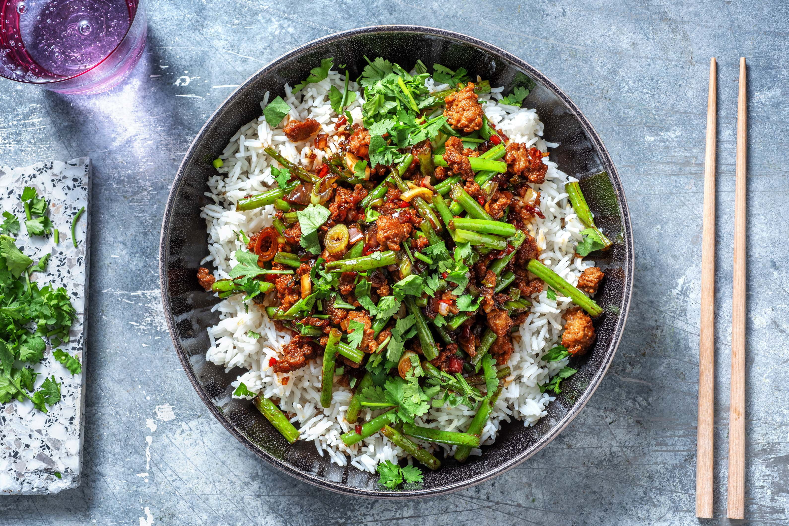

Thai Pork Bowl

Description
In its home country, this tasty Thai dish is known as Moo Pad Krapow. We can't help thinking that 'krapow' sounds like one of the captions from a 1960's Batman fight, but it's actually the name for a particularly lovely herb: Thai basil. It's fragrant, sweet and spicy with a slight aniseed flavour and really brings this stir-fry alive. Holy basil, Batman! It's dinner-dinner-dinner-dinner time!
Ingredients
- 1 Echalion Shallot
- 150 Basmati Rice
- 2 Garlic Cloves
- 2 Spring Onions
- 50 Ketjap Manis
- 150 Green Beans
- 25 Soy Sauce
- 1/2 Red Chilli
- 240 British Pork Mince
Steps
- Pour the water for the rice (see ingredients for amount) into a saucepan and bring to the boil. When boiling, add 0.25 tsp of salt, stir in the rice, lower the heat to medium and pop a lid on the pan. Leave to cook for 10 mins, then remove the pan from the heat (still covered) and leave to the side for another 10 mins or until ready to serve (the rice will continue to cook in its own steam).
- Meanwhile, halve, peel and chop the shallot into small pieces. Peel and grate the garlic (or use a garlic press). Halve the red chilli lengthways, de-seed and finely chop. Trim the spring onion and thinly slice. Trim the green beans then chop into thirds.
- Heat a splash of oil in a frying pan on high heat. Once hot, add the green beans and stir-fry until tender, about 5-6 mins. When cooked, transfer to a plate.
- Keep the pan on high heat and add another splash of oil if the pan is dry. Add the pork mince and stir-fry until browned, 6-8 mins, breaking it up with a wooden spoon as it cooks. When the pork is cooked, drain off any excess oil, add the shallot, garlic, spring onion and as much chilli as you dare. Cook until the veggies are softened, another 2-3 mins.
- Return the green beans to the pan. Add the ketjap manis and soy sauce and stir everything together. Tip: If the mixture is a little dry, add a splash of water.
- Remove the pan from the heat. Fluff up the rice with a fork and share between your bowls. Top with the pork stir-fry and get stuck in. Super tasty! Or, as they say in Thailand, Aloy mak!